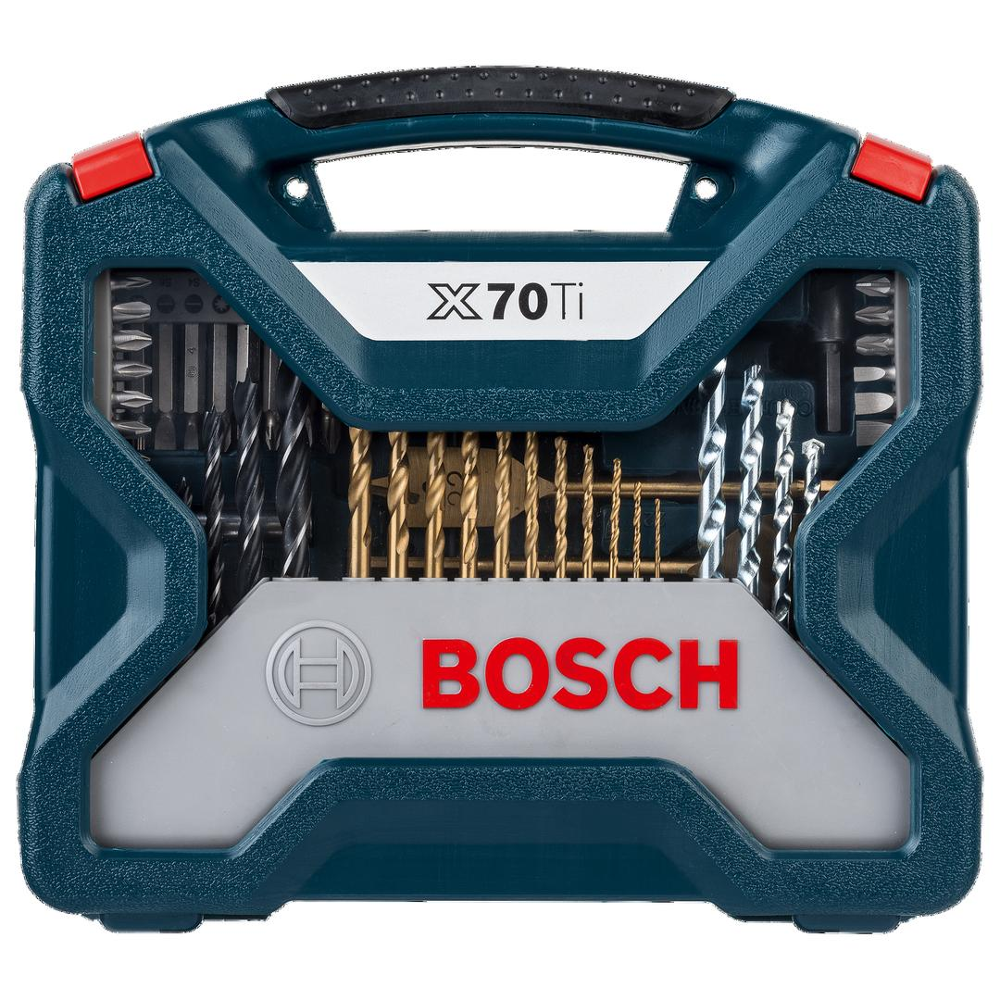
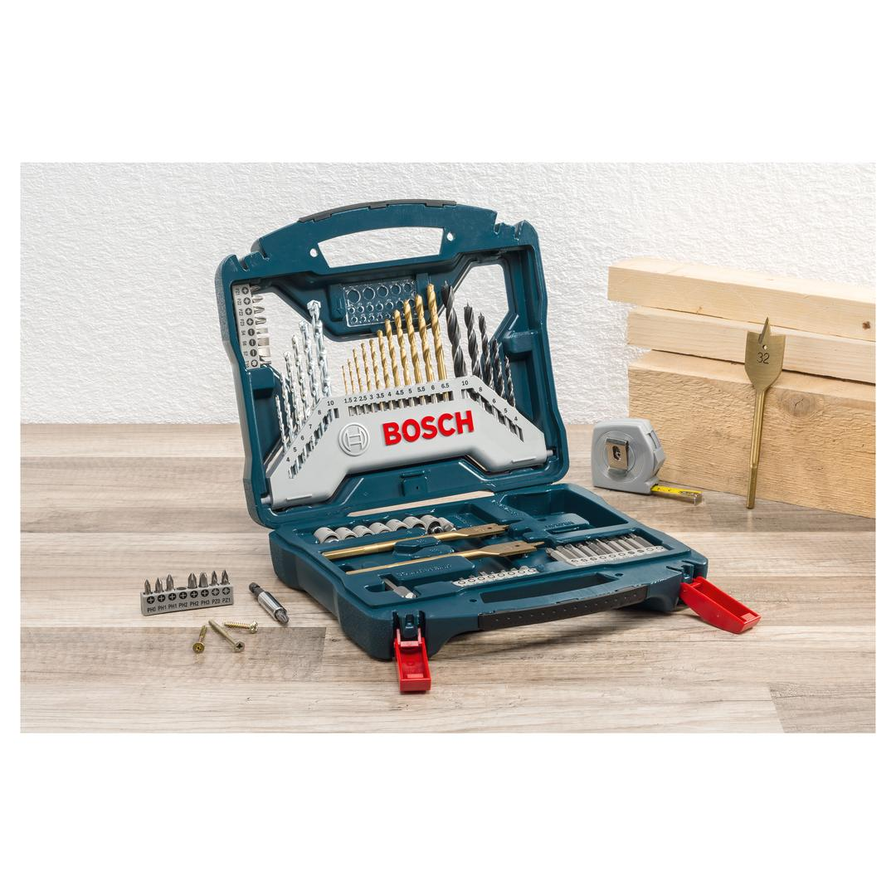

2607017412


| Contents |
11 HSS-TiN-coated metal drill bits, Ø 1.5-6.5 mm
6 masonry drill bits, Ø 4-10 mm
5 wood drill bits, Ø 4-10 mm
3 spade bits, TiN-coated, Ø 16/22/32 mm
24 screwdriver bits, L = 25 mm
PH 0/1/1/2/2/3
PZ 0/1/1/2/2/3
S 4/6/7
HEX 3/4/5/6
T 10/15/20/25/40
10 screwdriver bits, L = 50 mm
PH 1/2/3
PZ 1/2/3
S 4/6
T 20/25
7 nutsetters, Ø 4/5/6/7/8/9/10 mm
1 adapter for nutsetters |
| Packaging |
Plastic case with window and printed card |
| Dimensions (lxwxh) |
236 x 259 x 64 mm |
| Weight |
1.402 kg |
| Pack quantity |
70 Pcs |
| Minimum order quantity |
6 Pcs |
DIY with Bosch quality: Drilling and screwdriving made easy.